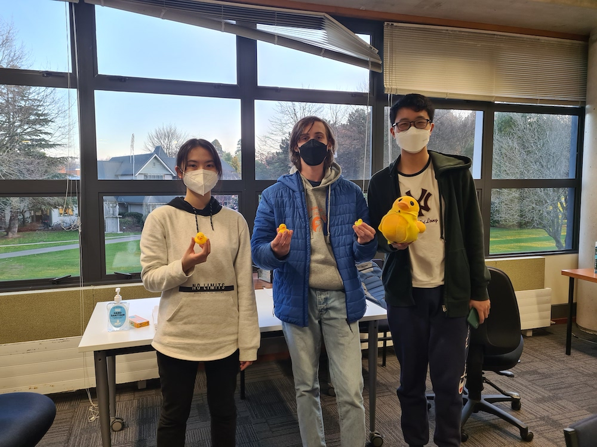

NZOI is organised by a group of people who are keen to share their enjoyment of informatics with New Zealand students. This group includes teachers, professional programmers, and university students. Many in the group have been through the NZOI training programme and competed in an International Olympiad in Informatics.
The group runs a programming contest which has several events throughout the year. It also holds a training camp in January each year to which the top programming students are invited.
The group relies heavily on sponsorship from tertiary organisations and business. The sponsorship subsidises the society’s activities including the supervising adults who are required to accompany the students selected to compete in the international olympiad event.
The society provides training opportunities in Informatics to selected New Zealand students who are currently enrolled in a New Zealand secondary school or who have been enrolled in the last eight months. The society selects, from those it has trained, students to attend the International Olympiad in Informatics. The society endeavours to foster informatics in New Zealand secondary schools. The society aims to be a non-profit group with all funds going to fulfill the purposes above.
In 2022, the New Zealand team competed remotely in the International Olympiad in Informatics, hosted by Indonesia as a hybrid event of both onsite and offsite. The team gathered in Christchurch in August and were again kindly sponsored by Canterbury University's CS department for labs and proctors. The 2 contest days were held at the more suitable times of 6pm to 11pm, with video captures uploaded well before midnight. The improvement in results was noticeable compared to our 4am and 3am finishes in 2020/2021.
We had Covid contingencies in place and unfortunately for one student, had to press them into action, requiring an extra proctor to watch and upload video as well as screen captures. The team performed very well, with Nicholas Grace winning a bronze medal, and Zalan and Bruce both improving their standings significantly compared to 2021.
The leaders were Suzanne Scott and Eric Song.
The team are pictured below, from left to right: Phoebe Zhang and Zalan Varga (both from Rangitoto College) and Bruce Chen (Christs College). Nicholas Grace is absent.
